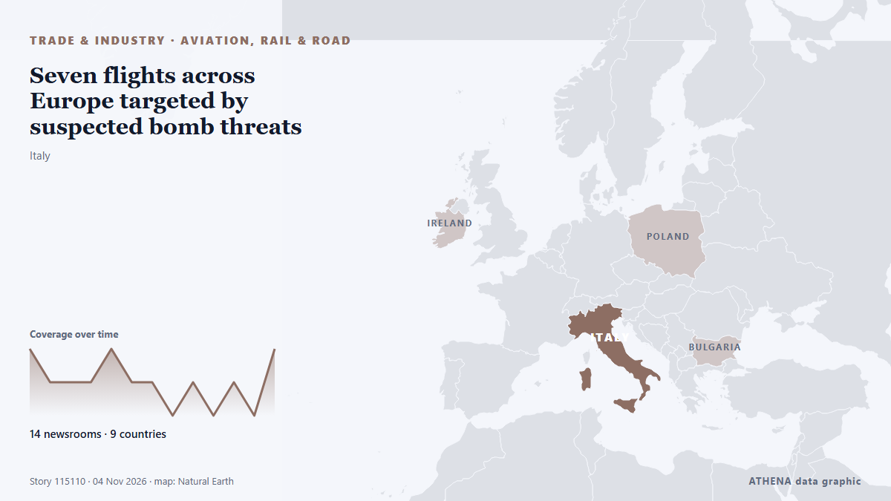

Trade, Industry & Infrastructure
SponsoredPresented by  Cybernetics and Artificial Intelligence Lab Welcome to the Cybernetics and Artificial Intelligence Laboratory, established at the Department of Business Administration of the National and Kapodistrian University of Athens. The lab is headed by Professor Dimitrios Thomakos. The lab aims to do research that can be published in top venues. Our research uses tools and methods of Artificial Intelligence, and lies in the following areas: - Forecasting - Decision making - Cyber security - Finance We are always looking forward to collaborating with exceptional students!
Cybernetics and Artificial Intelligence Lab Welcome to the Cybernetics and Artificial Intelligence Laboratory, established at the Department of Business Administration of the National and Kapodistrian University of Athens. The lab is headed by Professor Dimitrios Thomakos. The lab aims to do research that can be published in top venues. Our research uses tools and methods of Artificial Intelligence, and lies in the following areas: - Forecasting - Decision making - Cyber security - Finance We are always looking forward to collaborating with exceptional students!

Aviation, rail & roadSeven flights across Europe targeted by suspected bomb threats
Seven passenger planes across Europe, two of which departed from the UK, have been inspected following a series of suspected bomb threats. from The Island
| 22 Oct | 95 |
|---|---|
| 23 Oct | 73 |
| 24 Oct | 41 |
| 25 Oct | 57 |
| 26 Oct | 117 |
| 27 Oct | 103 |
| 28 Oct | 94 |
| 29 Oct | 95 |
| 30 Oct | 99 |
| 31 Oct | 36 |
| 1 Nov | 66 |
| 2 Nov | 119 |
| 3 Nov | 68 |
| 4 Nov | 19 |
Iran’s IRGC says four tankers destroyed after hitting mines near Strait of Hormuz
Coalition says it destroyed two ballistic missile launchers The Coalition has released footage it says shows the targeting and destruction of two ballistic missile launch platforms. from Gulf News
OMS Group Secures $1.03B Financing to Expand Subsea Cable-Laying Fleet
Singapore-based OMS Group has secured $1.0315 billion in corporate and export credit agency-backed financing facilities, supporting a fleet expansion that includes four new fibre-optic cable-laying… from MarineLink
Indian injured in attack on Saudi airport dies, total West Asia toll now 24
The Indian embassy in the Saudi capital, Riyadh, announced the death of the Indian man on social media on Wednesday. from Hindustan Times
Singapore Airlines says 46,000 booking records affected by Amadeus breach
SINGAPORE: Singapore Airlines said on Tuesday that about 46,000 booking records may have been affected by a cybersecurity incident involving Amadeus, its reservation technology provider. from New Straits Times
Pakistan Lost $40 Billion Since Trade With India Was Halted: Report
Pakistan's pharmaceutical industry relied on raw materials available in India, he said, adding that its imports from the neighbouring country could generate annual savings of USD 2 billion to USD 3… from NDTV
BTS Jimin’s father to close his Busan cafe after years as beloved fan landmark
For seven years, a converted factory in Busan's Nam-gu district has been a coffee shop with a second job: a proud father's shrine to his famous son, and a must-stop for BTS fans from around the world. from Gulf News
Trump says US close to trade deal with Canada, Carney says work remains
Canada and the US have slapped billions of dollars in tariffs on each other in recent months. from The Straits Times
U.S. to suspend South Africa, Rwanda from duty-free trade access
Trump terminates South Africa from AGOA Vusi.Bafetane Mon, 11/02/2026 - 19:32 WASHINGTON - The United States Trade Representative on Monday said Washington would exclude South Africa and Rwanda from… from eNCA
Pope Leo’s Argentina visit: consolation for Francis no-show
Francis visited several Latin American nations, including Brazil, during his papacy but never returned to Argentina, disappointing many compatriots. from Free Malaysia Today
Bosch gives chips their own division, eyeing €5bn in sales by 2030
Bosch will move its semiconductor business into a dedicated division from January 2028, as the German supplier looks to expand chip sales beyond the automotive industry. from The Next Web
King stops short of offering formal apology over transatlantic slave trade
In his address to presidents and prime ministers of the Commonwealth Charles said the transatlantic slave trade fills his heart with horror. from Evening Standard (London)
Around 10 European flights hit by bomb threats, triggering fighter jet scramble
LONDON: About 10 European flights were targeted by bomb threats on Tuesday, forcing the brief closure of a Warsaw airport and the scrambling of air force planes in Rome, authorities said. from New Straits Times
Tanker hit by two unknown projectiles off Oman, UKMTO says
The location of the latest strike matters most for oil. from investingLive (ForexLive)
NACOC explains why it allowed suspected cocaine trafficker to leave Ghana for Lebanon
The Narcotics Control Commission (NACOC) says it monitored a Syrian national suspected of trafficking approximately 40 kilogrammes of cocaine from Ghana before allowing him to travel to Lebanon as… from MyJoyOnline
Bomb threat prompts checks on Israel-bound cruise ship in Greek port
Nov 3 - A bomb threat to an Israel-bound cruise ship prompted a security operation at the Greek island port of Syros on Tuesday after an unknown person claimed an explosive device had been attached… from The Straits Times
Israeli ex-generals condemn settler violence, help Palestinian farmers
A rights group reported 180 physical attacks on Palestinian olive harvesters since the season began. from The Straits Times
New Ebola-Related Requirement for Travel to the US: What Passengers Must Declare
Korean Air will require all passengers traveling to the United States to submit an Ebola-related declaration confirming they have not visited or stayed in the Democratic Republic of the Congo within… from The Korea Times
11 tankers caught fire in Hormuz in 9 days: IRGC Navy
"One of the vessels is a supertanker; it is currently engulfed in flames following a powerful explosion," the Iranian Revolutionary Guard Corps (IRGC) Navy spokesperson said. from The Jerusalem Post
KONGSBERG expands underwater surveillance technology for port security
KONGSBERG has launched two new sonar systems designed to improve underwater surveillance, navigation and the protection of critical maritime infrastructure. from Container News
Trump to remove Rwanda and South Africa from US trade deal
The move comes barely a week after Rwanda's defence ministry was hit with sanctions by the US Treasury. from BBC News
Ryanair to review pay freezes and AI use to counter jet fuel price surge
The Dublin-based airliner said it was predicting a jump of roughly two billion euros in its fuel bill for the year to March 2028. from Evening Standard (London)
Kazakhstan and Azerbaijan sign agreements for Caspian ferry system and Baku terminal
Kazakhstan and Azerbaijan have signed two agreements to develop transport and logistics connections across the Caspian Sea, including a proposed ferry system and an intermodal cargo terminal at the… from Container News
TotalEnergies sheds partial stake ahead of appraisal ops at Nigerian block
TotalEnergies has set the wheels in motion to sell a partial interest in an offshore block to SAPETRO to fast-track the appraisal of a Nigerian field. from Offshore Energy
Armenia has effectively begun implementing TRIPP project, Pashinyan says
The Government of Armenia has effectively already begun implementing the “Trump Route for International Peace and Prosperity” (TRIPP) project, Prime Minister Nikol Pashinyan told lawmakers on Monday… from AzerNews
US Strikes Iranian Targets in the Strait of Hormuz, Official Says
The drop reflects traders trimming some of the geopolitical premium built into crude in recent weeks rather than any change in physical supply, which remains constrained while Hormuz flows are… from investingLive (ForexLive)
Restoration continues to open Hagia Sophia’s underground chambers to visitors
Restoration work at Istanbul’s 1,500-year-old Hagia Sophia is continuing with the aim of opening parts of its previously inaccessible underground tunnels, chambers and burial structures to visitors… from Hürriyet Daily News
Indian Navy Rescues 20 Crew Members From Pirated Vessel Azini In 48-Hour Op
The operation was successfully carried out on November 2, with the Indian Navy locating and intercepting the vessel and securing the safe release of all crew members from heavily armed pirates. from NDTV
MacGregor secures retrofit contract for 35 Wallenius Wilhelmsen vessels
MacGregor has secured a contract to upgrade Programmable Logic Controller (PLC) systems aboard 35 Pure Car and Truck Carrier (PCTC) vessels operated by Wallenius Wilhelmsen. from Container News
NAVTOR introduces real-time AIS streaming in NavFleet platform
Maritime technology company NAVTOR has introduced real-time AIS streaming to its NavFleet platform, allowing fleet managers to monitor vessel positions, movements and surrounding traffic with minimal… from MarineLink
Five arrested after South African farmer shot and tortured
The attack on Donovan Marx, 50, comes as right-wing groups say there is a genocide of white people - a claim widely discredited. from BBC News
Vessel Struck in Strait of Hormuz
Data and insights tracking transit activity, oil prices, petroleum reserves, supply chain impacts and geopolitical developments affecting the waterway. from IndustryWeek
3 Steps to Guard Burkina Faso Domain Names
Burkina Faso domain names can be lost to a missed renewal or a lookalike site. from The Rio Times
Iran’s export to Turkey rises 59% in H1
Director General of the West Asia and Africa Office of the Iran Trade Promotion Organization, while describing Iran’s trade trend with some West Asian countries as positive, announced a 59 percent… from Tehran Times
Serbia remembers 16 killed in Novi Sad canopy collapse 2 years on
The student movement called on citizens to attend a memorial gathering in Novi Sad on Sunday, November 1, to commemorate the victims of the train stat. from N1 Serbia (English)